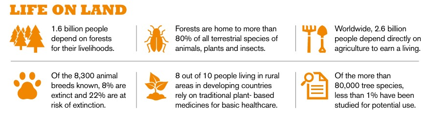
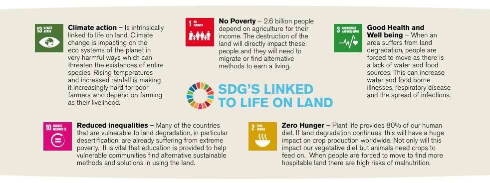

Education on Sustainable Development: Life on Land
Introduction
Delve into the significance of safeguarding and conserving life on land, understanding its critical role in maintaining biodiversity and ecological balance. Explore how these efforts are intricately connected to achieving the United Nations' Sustainable Development Goals, which aim to promote a healthier, more sustainable future for our planet and all its inhabitants.
Understanding Life on Land
What is Life on Land?
Life on land includes a wide array of terrestrial ecosystems, each playing a crucial role in sustaining biodiversity and supporting human well-being. These ecosystems, ranging from forests and grasslands to deserts and wetlands, are integral to maintaining the delicate balance of our natural world. They provide essential services such as clean air and water, fertile soil for agriculture, and habitats for countless species of plants and animals. Furthermore, terrestrial ecosystems offer recreational and cultural benefits, contributing significantly to the quality of human life and the health of our planet.
Key Issues and Challenges
Deforestation and Habitat Loss
Deforestation, the process of clearing or thinning forests by humans, leads to the loss of habitats for numerous species, thereby significantly contributing to the decline in biodiversity. This environmental degradation occurs primarily due to key causes such as agricultural expansion, where forests are cleared to make way for crops and livestock, and logging activities, where trees are cut down for timber and paper production.
Climate Change
Climate change significantly impacts terrestrial ecosystems, leading to the alteration of natural habitats and posing serious threats to various species. The rising temperatures, changing precipitation patterns, and increased frequency of extreme weather events disrupt the delicate balance of these ecosystems. As a result, many species struggle to adapt to the rapidly changing conditions, facing heightened risks of extinction and loss of biodiversity. The cascading effects of climate change on land-based ecosystems underscore the urgent need for comprehensive environmental protection and climate mitigation strategies.
Pollution and Land Degradation
Pollution and soil degradation significantly diminish the productivity of the land, making it less fertile and less capable of supporting robust agricultural activities. This decline in land productivity not only threatens food security but also inflicts severe harm on the surrounding ecosystems. The pollutants and degraded soil disrupt the delicate balance of these ecosystems, leading to a loss of biodiversity, the destruction of habitats, and the overall weakening of environmental health.
Species Extinction
The extinction of species leads to significant disruptions in ecosystems, causing imbalances that affect various ecological processes and interactions. This loss of species diversity ultimately results in a reduction of biodiversity, which diminishes the resilience and health of the environment as a whole.
Sustainable Practices and Solutions
Sustainable Agriculture
Implementing various techniques, such as crop rotation and organic farming, plays a crucial role in sustaining and enhancing soil health and productivity. By rotating crops, farmers can prevent soil depletion and reduce the incidence of pests and diseases, thereby maintaining the fertility and structure of the soil. Organic farming, on the other hand, emphasizes the use of natural inputs and environmentally friendly practices, which not only improve soil health but also promote biodiversity and ecological balance. Together, these practices contribute to the long-term sustainability of agricultural systems by ensuring that the soil remains fertile and productive for future generations.

Forestry Management
Implementing sustainable forestry practices and committing to extensive reforestation efforts are crucial for the effective preservation and long-term health of our forest ecosystems. These practices are vital not only for maintaining biodiversity but also for combating climate change and ensuring that future generations inherit a thriving and resilient natural environment.

Conservation Efforts
Protected areas, such as national parks and wildlife reserves, along with community-led projects, which involve local populations in conservation efforts, play a crucial and indispensable role in the preservation of biodiversity and the maintenance of ecological balance.
Restoration Projects
Study and analyze various successful land restoration projects to gain insight into the effective strategies and techniques they employ. By understanding the methodologies and approaches utilized in these projects, you can learn valuable lessons and best practices for applying similar principles to your own land restoration efforts.